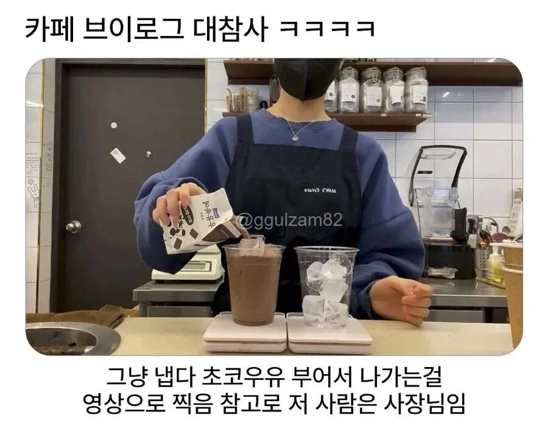

존나 씹혜자인데????
혜자 아님. 보통 초코라떼라고 나가는 메뉴들이 초코소스나 초코파우더를 원유에 녹여서 나가는데,
그게 코코아 함량도 더 높고, 원유도 더 많이 들어감. 저게 단가도 더 비싸고 더 안 좋은거 먹는거임.
게다가 소비자 입장에서도 저럴거면 편의점가서 먹는게 훨씬 쌈.
저게 왜 혜자야 ........ 가격만 봐도 아니잖아
살면서 택갈이로 세네배 가격에 사먹는걸
혜자라고 하는거 처음 봤음....
글쎄 에이드류, 차종류 6천원 7천원 파는거 보단 나은거 같은데
창렬하고 헷갈린거 아니냐?
저게 기분은 거지같아서 그렇지
단기로치면 더 비싸긴 해
저게 단가는 더 비싸지 않나? 왜 저거 쓰지
저기에 초코드리즐 한바퀴 돌리고 위에 휘핑크림 얹으면 카페음료지뭐 ㅋㅋ
하지만 재료원가는 커피류가 훨씬 쌀텐데
티 3-4천원내고 먹는거 생각하면 저정도면 양반이지
자영업자 무시하는 것도 아니고, 열심히 하시는 분들 장사 더 잘 됏으면 좋겠는데
일부 음식점. 카페 가보면
와 이렇게 장사하면서 뭐 경기가 어쩌니, 장사가 왜 안되니 하는거 보면 이해 안될 때도 많음.
음식 수준도 내가 집에서 유튜브 보고 딸깍 따라만드는 것보다 못하는 경우도 많고.
카페에서 음료 뭐 사먹는게 가성비 제일 좋은거임?
뭐 원재료 기준? 아니면 손많이 가는걸로? 그냥 먹고 싶은거 먹는게 제일 가성비임.
우유랑 아이스크림 들어간게 그래도 제일 원가율이 높지
네스퀵을 3배 가격으로 사먹는 호구들이 있다고..?
더 비싼거아닌가..아님말고
이거 상관 없다고 하는 애들은
너 화장실 갔는데 거기서 요리사가 손 씻고 나가는 모습이나
담배핀 일식요리사 본 기분을 생각하면 될거라고 본다
개인 카페나 제대로 하는 곳은 코코아 가루, 설탕, 초콜릿, 시판 초코 소스를 잘 조합해서 베이스를 만들고 거기다 우유를 넣어서 만듬 가루만 탄거랑은 차원이 다르다 프랜차이즈 중에선 텐퍼센트가 그런 식으로 만들어서 가장 괜찮음